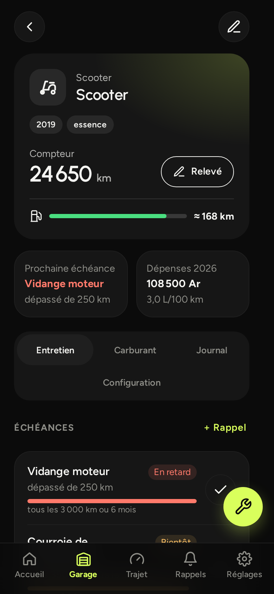
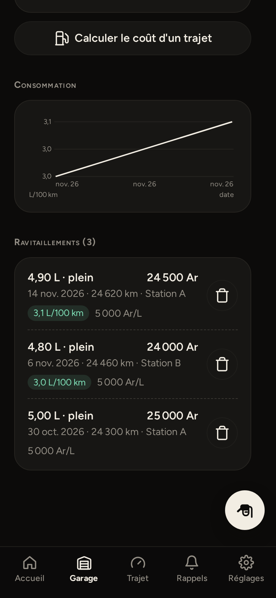
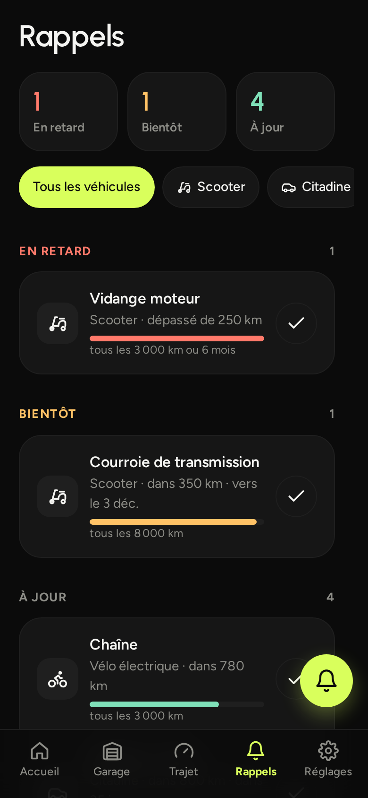
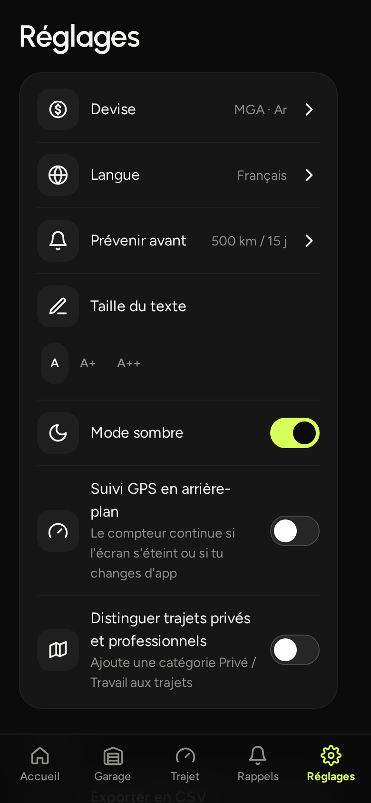

Maintenance and reminders
History with receipt photos. Reminders by “km or time, whichever comes first”, notified even when the app is closed.

Scooter, motorbike, car, truck or bike: Dia tracks maintenance, fuel and trips. Offline, no account, no ads.

Dia means “trip” in Malagasy. Built for Madagascar first, it works anywhere.
History with receipt photos. Reminders by “km or time, whichever comes first”, notified even when the app is closed.

Fill 2 fields out of 3, consumption, cost per km, range from your fuel gauge.

Speed, distance and track, even in the background.

Route, fuel stations on the way, warning if a stretch exceeds your range.

Problems, tests, adjustments, vehicle setup.

Nothing leaves your phone. No server, no tracker. Export to JSON or CSV whenever you like.
PrivacyType, energy, odometer. Dia suggests the right reminders.
A few seconds at the pump or the garage.
Dia reminds you before the oil change, brakes or belt.
One screen per need.
All in the same app.



Scooter, car, bike: each with its own odometer, reminders and expenses.
Screenshots taken with demo data.
Yes. Everything works offline, except the map background and trip planning, which need a connection while searching.
Yes: no ads, no subscription, no paid version. The app lives on donations from those who want to give.
Only on your phone. No account, no Dia server. Remember to export a backup (Settings) before changing phones.
Android 7 or newer. No iPhone version for now.
Scooter, motorbike, car, van, truck, bike and e-bike, as many as you like.
No ads, no subscription, no data sold. If the app helps you, a small donation keeps it going. MVola or bank card, any amount.